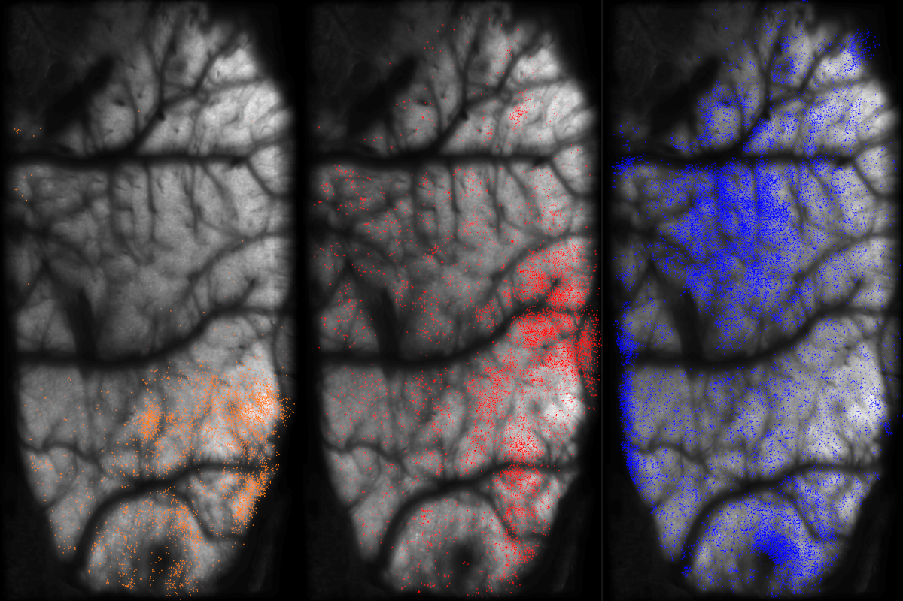

Light Beads Microscopy (LBM) Pipeline#
A pipeline for processing light beads microscopy (LBM) datasets.
For background, theory and design of LBM technology, see the reference publication.
Currently, inputs to this pipeline are limited to ScanImage tiff files. However, only the first step of this pipeline which converts the multi-ROI .tiff into a 4D volumetric time-series requires scanimage .tiff files.
Quickstart#
The easiest way to get started with the pipeline is to follow the LBM_demo_pipeline script.
Pipeline Steps#
There are 4 core steps in this pipeline:
convertScanImageTiffToVolume()
motionCorrectPlane()
segmentPlane()
collatePlane()
Requirements#
MATLAB (Tested on 2023a, 2023b, 2024b)
- Toolboxes:
Parallel Computing Toolbox
Statistics and Machine Learning Toolbox
Image Processing Toolbox
Algorithms#
The following algorithms perform the main computations and are included by default in the pipeline:
CNMF segmentation and neuronal source extraction.
NoRMCorre piecewise rigid motion correction.
constrained-foopsi constrained deconvolution spike inference.
See the (WIP) Documentation for more information.
{kind=link}
A pipeline for processing light beads microscopy (LBM) datasets.
For background, theory and design of LBM technology, see the reference publication.
Currently, inputs to this pipeline are limited to ScanImage tiff files.
See the `README`_ for pipeline requirements and algorithms.
Documentation Glossary:#
User Guide
API: